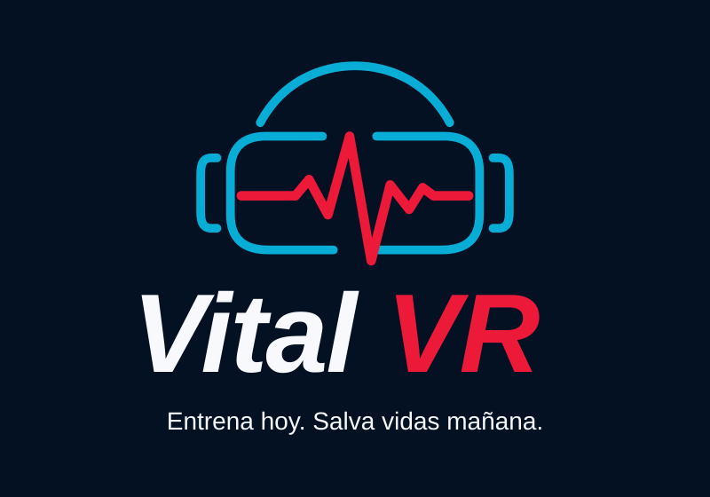
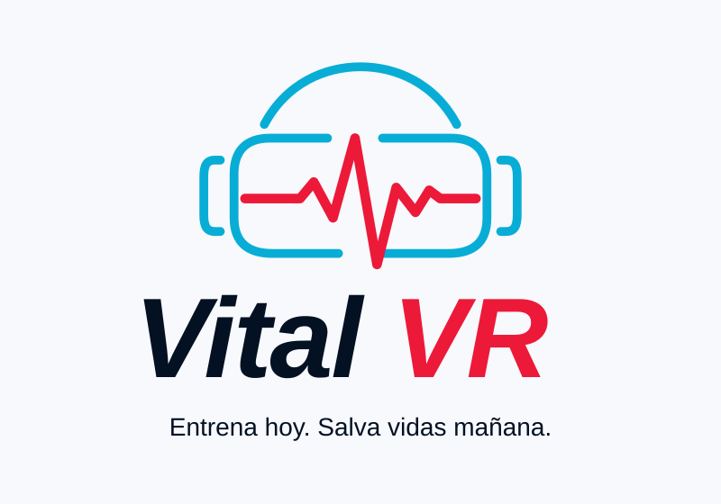

01 · PRINCIPALDescargar SVG ↗
VITAL VR / SISTEMA DE MARCA
Una identidad para acercar la formación a la experiencia: visor cyan, pulso rojo y una base azul marino.


Azul marino y blanco como base. Rojo para la marca y la acción. Cyan para orientación y pequeños acentos.
#031123#F7F9FC#ED1939#08ADD6#0B2037#C8102EMARCA COMPACTA
El logo horizontal acompaña la navegación y los paneles del simulador. El símbolo identifica ventanas, accesos e iconos.
Logo horizontal ↗ Símbolo ↗Un solo logo principal. Mantener la proporción y el espacio libre alrededor. Elegir la variante clara u oscura según el fondo; conservar los colores del visor y del pulso.
Jerarquía clara. Texto blanco, información secundaria en gris azulado, llamadas a la acción en rojo y foco visible en cyan. Las etiquetas siempre acompañan los estados.
La marca acompaña. El rojo y el cyan se reservan para la interfaz y la señalización de marca. La sala y los instrumentos mantienen sus materiales y colores clínicos.